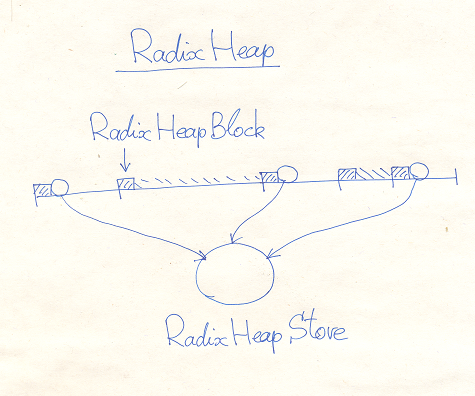

Files CCore/inc/RadixHeap.h CCore/src/RadixHeap.cpp
The class RadixHeap is a heart of CCore heaps. It is a complicated class, built from several parts. The primary part is the template argument Mem, which is responsible for the primary memory allocation. This class is used to allocated a large memory blocks, then RadixHeap splits them into smaller parts (aka blocks) and manages these parts. Each such block starts from the header of the type RadixHeapBlock. The part can be used or free. The space after the header in a free block is used to create a special control object, these objects are used to manage the free blocks set by the RadixHeapStore. In used blocks this space is the allocated memory. There is no two free consecutive blocks. If such blocks appear in the free() operation, they are immediately merged into the single free block. When block is allocated, it is stamped by the "magic number". This stamp is used to detect incorrect block pointers. It makes the heap protected from incorrect operations (not 100%).
RadixHeapStore manages free heap blocks. The efficiency of this class is a key to the efficiency of the heap operations. This class uses the set of lists to store small blocks and the radix tree to store large blocks. That is how we provides constant operation time limits.
template <class Mem>
class RadixHeap : NoCopy
{
Mem large_mem;
RadixHeapStore store;
ulen count;
public:
template <class ... SS>
explicit RadixHeap(SS && ... ss);
~RadixHeap();
bool isEmpty() const { return count==0; }
Space alloc(ulen len); // ret.len!=0 on success (==memlen)
ulen getLen(const void *mem); // mem!=0, return memlen
ulen free(void *mem); // mem!=0, return memlen
DeltaLen extend(void *mem,ulen len); // mem!=0
DeltaLen shrink(void *mem,ulen len); // mem!=0
};
Constructor forwards its arguments to the Mem object (large_mem);
isEmpty() returns true, if there is no allocated memory blocks from the heap.
alloc() tries to allocate a memory. On failure it returns a null Space object. Otherwise the resulting Space object contains non-zero memory pointer and non-zero memory length, which is greater or equal the argument len.
Other methods require a valid non-null pointer mem.
getLen() returns the length of the memory block.
free() releases the memory block, this method returns the length of the memory block.
extend() extends the memory block up to the given len, if possible. If the len is not greater than the length of the memory block, the operation is successful, but change nothing. The resulting DeltaLen object has the field ok, which indicates success of the operation, and the field delta, equals the difference between the length of the new block and the old one.
shrink() shrinks the memory block down to the given len. This operation is successful only if the len is not greater than the length of the memory block. The resulting DeltaLen object has the field ok, which indicates success of the operation, and the field delta, equals the difference between the length of the old block and the new one.
A primary memory provider is a class with the following "prototype":
class Mem
{
const ulen max_store_len; // aligned
public:
Mem(....);
void cleanup(bool clean);
ulen getMaxStoreLen() const { return max_store_len; }
RadixHeapBlock * alloc(ulen blen); // blen aligned
// ( blen<=max_store_len ) => ( ret->len<=max_store_len )
void free(RadixHeapBlock *block); // block!=0
bool extend(RadixHeapBlock *block,ulen blen); // block!=0, blen aligned, blen>block->len
ulen shrink(RadixHeapBlock *block,ulen blen); // block!=0, blen aligned, blen<=block->len , return delta
};
Mem constructor(s) is custom.
Instead of destructor, Mem has the method cleanup(). The argument clean is true, if all memory blocks have been released, if not the method must fail. If the method is failed, it is recommended to call the Abort(). This is because some memory is still in use, but we are going to destroy the heap. Continuing execution under such circumstances likely leads to memory destruction.
max_store_len is a maximum block length, which is allowed to be splitted and stored. If the block length is greater, then such blocks are allocated and released as whole. This value must be large enough, for example, in PageMem it is set to 16*1024*Sys::MemPageLen, by default.
The method alloc() is called to allocate a large memory block. The argument blen is the total block length, it is an aligned value. The method must allocate a block of memory at least required length, create the RadixHeapBlock object at the beginning of this block, and return the pointer to this object. If a memory cannot be allocated, the null pointer is returned. If the blen is not greater, than the max_store_len, then the allocated block length also must not exceed this value. RadixHeapBlock must be initialized by the method init(total_block_length).
The method free() is called to release a memory block, once it is not in use. The block is always non-null. If you allocate a memory by the RadixHeap and then release it, then the large blocks will be freed as well. So, to prevent the last block from fluffing, Mem must implement a caching to avoid unnecessary extra expensive allocation/deallocation.
extend() extends the large block. The block is always non-null and the blen is aligned and greater than the block length. The method returns true on success. It must reinitalize the block.
shrink() shrinks the large block. The block is always non-null and the blen is aligned and not greater than the block length. The method returns delta length. It must reinitalize the block.